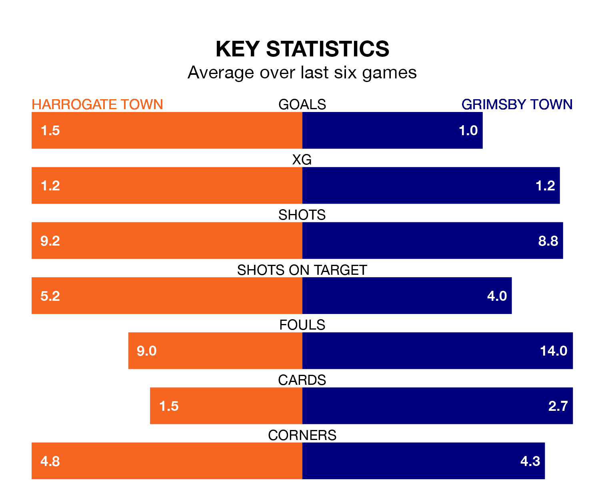

Struggling Grimsby Town face Harrogate Town away at the EnviroVent Stadium on Tuesday looking to build on a win in their last league outing.
After securing all three points with a 1-0 victory over Newport County on Saturday, the Mariners sit 21st in EFL League Two.
They travel to play a Harrogate side 13th in the standings, who lost in their last match, 3-0 against Notts County.
In the last 10 years, Harrogate and Grimsby have played each other on seven occasions. Harrogate won four of them, Grimsby one, and they drew twice.
On average, Harrogate scored 1.6 goals and the Mariners 1.4 in those matches.
Their last meeting was on December 23, when Harrogate won 2-1 away.
With 52 goals in 42 games so far this season, Harrogate are scoring at below the league average rate with 1.2 goals per game. But they are conceding fewer than average too, letting in 60 goals at a rate of 1.4 per game.
Grimsby are also below average scorers, with 1.3 goals per game, compared to a league average of 1.5. They have conceded 1.7 goals per game.
Harrogate Town are in mixed form in EFL League Two, with two wins and three draws from their last six games.
With two wins and two draws over that period, Grimsby Town's form is slightly worse – they have taken eight points from 18, compared to the hosts' nine.
Harrogate's Matty Daly is among the league's most creative players, racking up nine assists in 36 appearances so far this season, and holding fourth spot in EFL League Two's assist charts.
For the Mariners, Gavan Holohan has set up the most goals, having laid on six assists in 37 games.
Tuesday's match will be refereed by Thomas Parsons, who has taken charge of 12 EFL League Two games so far this season, issuing two red cards and booking 65 players. He has awarded three penalties.
The last Harrogate game Parsons refereed was a 3-1 home loss to Stockport County on October 14. His last Grimsby match was their 3-1 loss at home against Stockport County on February 10.
Updated: 11:20 (UTC), 09/04/24